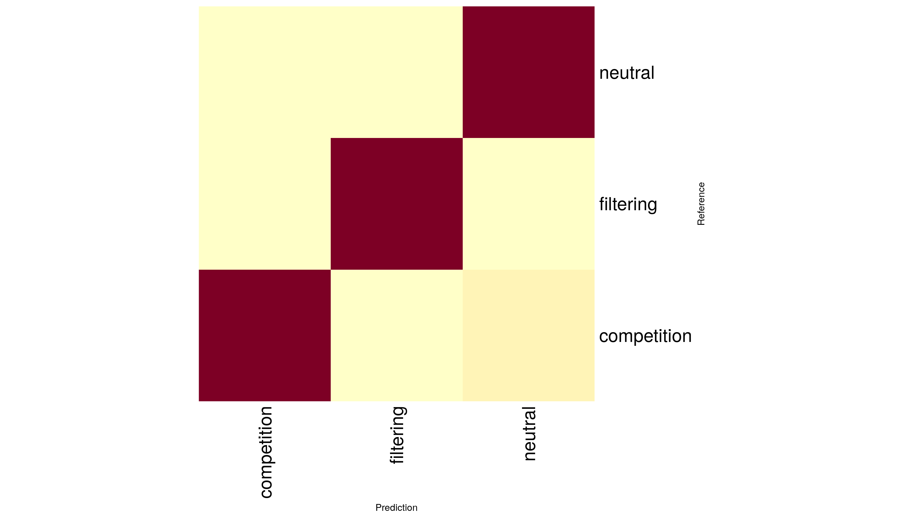

10 ML model selection with MESS simulations
10.1 Key questions
- How do I perform a inference using MESS simulations in R?
10.2 Lesson objectives
After this lesson, learners should be able to…
- Use RoLE simulations and RandomForest ML (w/ tidymodels) to perform inference
- Interpret results in terms of story
- Brainstorm applications to real data
10.3 Planned exercises
- Lecture: How does ML work with MESS simulations?
- Run MESS model simulations
- ML assembly model classification
- ML parameter estimation
- Posterior predictive simulations (if time)
- Free time to experiment with other example datasets
10.3.1 Lecture: How does ML work with MESS simulations?
Lecture: How does machine learning work with MESS simulations?
10.3.1.1 Download the pre-baked simulations
Since it can take quite some time to run a number of simulations sufficient for model selection and parameter estimation we will use a suite of pre-baked simulations generated ahead of time. Go to the terminal tab in Rstudio and fetch them with wget from the workshop site:
## Make sure you are in your home directory
cd ~
wget https://github.com/role-model/process-models-workshop/raw/main/data/MESS-SIMOUT.csv.gz
gunzip MESS-SIMOUT.csv.gz
wc -l MESS-SIMOUT.txtMESS-SIMOUT.csv.gz 100%[====================>] 35.24M 1.12MB/s in 32s
2023-06-15 14:31:54 (1.12 MB/s) - ‘MESS-SIMOUT.csv.gz’ saved [36954693/36954693]
3000 SIMOUT.txtThe wc command counts the number of lines if you pass it the -l flag. You can see this series of 3000 simulations is about 35MB gzipped.
10.3.2 ML assembly model classification
The first step is now to assess the model of community assembly that best fits the data. The three models are neutral, in which all individuals are ecologically equivalent; competition, in which species have traits, and differential survival probability is weighted by distance of traits from the trait mean in the local community (closer to the trait mean == higher probability of death); and filtering, in which there is an environmental optimum, and proximity of trait values to this optimum is positively correlated with survival probability.
Basically we want to know, are individuals in the local community ecologically equivalent, and if not are they interacting more with each other or more with the local environment.
install.packages("randomForest")
install.packages(pkgs = "caret", dependencies = c("Depends", "Imports"))
library(randomForest)
library(caret)simdata = MESS$load_local_sims("MESS-SIMOUT.csv")[[1]]
simdata$assembly_model <- as.factor(simdata$assembly_model)
table(simdata$assembly_model)competition filtering neutral
1000 1000 99910.3.2.1 Train the ML classifier
## 70/30 test/train split
tmp <- sample(2, nrow(simdata), replace = TRUE, prob = c(0.7, 0.3))
train <- simdata[tmp==1,]
test <- simdata[tmp==2,]## Experiment with results for different axes of data!
rf <- randomForest(assembly_model ~ local_S + pi_h1 + abund_h1 + trait_h1, data=train, proximity=TRUE)
print(rf)Call:
randomForest(formula = assembly_model ~ local_S + pi_h1 + abund_h1 + trait_h1, data = train, proximity = TRUE)
Type of random forest: classification
Number of trees: 500
No. of variables tried at each split: 2
OOB estimate of error rate: 19.41%
Confusion matrix:
competition filtering neutral class.error
competition 538 33 124 0.2258993
filtering 24 571 89 0.1652047
neutral 61 71 560 0.190751410.3.2.2 Plot confusion matrix
test_predictions <- predict(rf, test)
cm <- confusionMatrix(test_predictions, test$assembly_model)Confusion Matrix and Statistics
Reference
Prediction competition filtering neutral
competition 233 13 32
filtering 23 270 28
neutral 49 33 247
Overall Statistics
Accuracy : 0.8082
95% CI : (0.7814, 0.833)
No Information Rate : 0.3405
P-Value [Acc > NIR] : < 2e-16
Kappa : 0.7122
Mcnemar's Test P-Value : 0.08011
Statistics by Class:
Class: competition Class: filtering Class: neutral
Sensitivity 0.7639 0.8544 0.8046
Specificity 0.9278 0.9167 0.8680
Pos Pred Value 0.8381 0.8411 0.7508
Neg Pred Value 0.8892 0.9242 0.8998
Prevalence 0.3287 0.3405 0.3308
Detection Rate 0.2511 0.2909 0.2662
Detection Prevalence 0.2996 0.3459 0.3545
Balanced Accuracy 0.8459 0.8855 0.8363heatmap(cm$table, Rowv=NA, Colv=NA, margins=c(12, 12), xlab="Prediction", ylab="Reference")
varImpPlot(rf,
sort = T,
n.var = 4,
main = "Variable Importance")MDSplot(rf, train$assembly_model)10.3.3 Perform classification of empirical data and view results
p_emp <- predict(rf, test[1, ], type="prob")
p_emp competition filtering neutral
1 0.016 0.04 0.94410.3.4 ML parameter estimation
Now that we have identified the neutral model as the most probable, we can estimate parameters of the emipirical data given this model. Essentially, we are asking the question “What are the parameters of the model that generate summary statistics most similar to those of the empirical data?”
10.3.4.1 Train the ML regressor
10.3.4.2 Plot cross-validation results
10.3.4.3 Perform regression to predict dispersal_prob of empirical data and view results
10.4 Key points
- Key
- point
- one